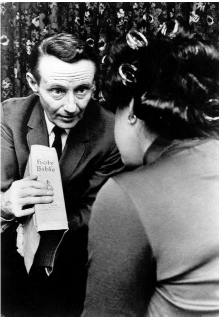
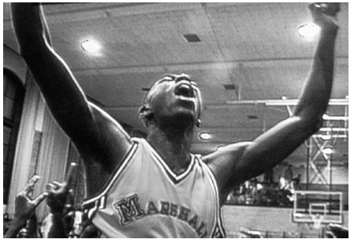

由以上三位传奇性人物引导的纪录片制作潮流，在20世纪60年代的一场电影革命中受到极大的冲击。这场革命没有确定的名称，有人将其称作真实电影，有人将它叫做观察式电影或直接电影。这种纪录片形式与当时的纪录片标准制作模式——事先计划、剧本创作、舞台、灯光、搬演和采访——截然不同。所有这些传统的方法，都是与庞大、笨重的35毫米电影设备相适应的，也符合当时观众对纪录片的期待。16毫米的设备由于战争期间军队的使用而变得更加受欢迎，流通也更广，真实电影（后面我们就采用这一涵盖很广的术语）就使用了这一轻便很多的设备。真实电影有着全新的声音，展现的主题常常也有所不同。
真实电影的制作人用更轻巧的、16毫米的设备将人们带去了他们从未见过的地方——普通人家的房间、少年们跳舞的场地、竞选活动的幕后密室、有名人的后台、罢工的现场、精神病院的内部——并且把他们所看到的拍成了纪录片。他们把海量的拍摄脚本带到剪辑室，通过编辑，找到他们要讲的故事。他们首次运用了音画同步这一新技术——运用16毫米的设备，有史以来第一次他们可以同时记录画面和声音——捕捉到日常对话，而多数影片也开始不再使用旁白。
真实电影派的践行者如今遍布整个纪录片领域，其中一些制作人早在真实电影运动前就开始创作，比如法国电影传奇人物阿涅丝·瓦尔达（《我和拾穗者》，2000），比如英国的金·隆吉诺托和中国的王兵（《铁西区》，2003）等体现了当今制作潮流的制作人，还有其他正在崛起的电影人。锐意进取的制作人普遍采用真实电影这一形式，“步入未来”项目（2002）可以证明这一点。这一由南非国家电视台（SABC）和几家欧洲公共电视台合作打造的项目聚焦于南部非洲的艾滋病这一争议话题。从这一项目中诞生了38部电影，大部分都是由第一次执导电影的制作人创作的，大部分在制作时都采取了真实电影的习惯手法。
发展历程
真实电影这一电影风格的革命开始时，正值人们对自上而下的媒体权威的不信任日益加剧；而此时人们体验过了第二次世界大战期间的宣传，广告作为一种洗脑的国际语言日益流行，大众传媒的影响力也开始凸显，这些背景或许也催化了这场革命。对于媒体的不信任背后，有着更为广阔的社会运动，即争取公正、平等、政治公开和包容性的运动。这些运动触及了世界的每一个角落，带来了殖民主义的终结、政府机构的变革，也让社会低等级人群、妇女和残疾人等受歧视的社会群体在争取民权方面获得了胜利。
这场运动的最初迹象其实和技术并没有什么联系。20世纪50年代末英国出现了自由电影运动，其特征是公开嘲笑严肃的、格里尔森式的、为了教育公众和服务民族团结的任务而拍摄的电影。自由电影实实在在地将自己从这类任务中解放出来。林赛·安德森的《梦幻世界》（1953）与卡雷尔·赖斯和托尼·理查德森的《妈妈不让》（1956）带观众去看工薪阶层孩子假期的游乐园和爵士酒吧之行。这些纪录片没有含沙射影地批判片中的角色，不向观众灌输电影的结论，也没有告诉观众他们将要看的东西很重要。这些影片只是提供了一些机会，让观众观察到日常生活的生动场面，也直截了当地表明了制作人的兴趣所在。另外一些作品则体现出强烈的、与现状对立的道德立场。比如，法国纪录片制作人乔治·弗朗瑞拍摄了《野兽的血》（1949）和《巴黎伤兵院》（1952），分别描绘了一家屠宰场和一家伤残军人安置院。《野兽的血》暴露了日常鲜肉供应背后的残酷，含蓄地将对动物的屠杀和对人的屠杀进行比较；而《巴黎伤兵院》则公开地表达了反军事和反教权的立场。
加拿大、美国和法国的制作人则迅速地将技术革新用于推广一种新的纪录片的拍摄方法。时间和生命广播公司资助罗伯特·德鲁进行了电影实验，德鲁与工程师D.A.佩内贝克以及制作人戴维·梅索斯、阿尔伯特·梅索斯和理查德·利科克一起合作。（利科克因为参与弗莱厄蒂制作的《路易斯安那州的故事》而和纪录片结下了不解之缘。）在法国纪录片制作人兼工程师让——皮埃尔·博维亚拉的帮助下，这些富有创意的制作人成功地研制出一套摄制系统，可以不用把所有设备都接在一起连到说话者身上就能同步录音。
在美国，电影实验也不断涌现，虽然并不总是成功的。德鲁的团队在纪录片《初选》（1960）中，追踪了约翰·肯尼迪和休伯特·汉弗莱之间的选战。看得一头雾水的美国广播公司节目制作人拒绝播放该片，说它看起来像“一团乱麻”（指没有经过剪辑的脚本）；现在看来，这部片子是精心制作的，虽然用珍妮·霍尔的话说，它有一种让人透不过气来的身临其境之感。不过，美国广播公司的节目仍然继续播放此类纪录片，虽然该公司经常为了自己的目的对影片进行重新剪辑。比如，理查德·利科克的《母亲节快乐》（1963）记录了一个五胞胎诞生的故事，要体现的是公众对这一事件的庆祝中极度商业主义的倾向，而美国广播公司却重新剪辑了此纪录片脚本，将其改编成一个全城人团结起来帮助一个家庭的温馨故事。（后来，利科克将原版本公之于世。）
真实电影（有时叫做直接电影、观察电影；在加拿大被叫做坦率之眼，是由一部电视纪录片剧集而得名的）以其各种可能性让制作人兴奋不已。戴维·梅索斯和阿尔·梅索斯 [15] 制作了一系列震撼的故事纪录片，在艺术电影保留节目巡演中备受称赞，这样的巡演是当时电影文化的主要体现。在纪录片《推销员》（1968）中，梅索斯兄弟的镜头追随一群推销《圣经》的人，这些人在不断兜售这本圣书的过程中，历经着美国梦带来的矛盾。电影的编辑夏洛特·兹韦林将这一脚本剪辑成了一个美国式的悲剧。影片对于梦想崩塌的呈现悲伤而煽情。该片播放时，美国社会因为对越战的不同态度和不同的文化价值观而空前分化。不过，虽然《推销员》有着强烈的社会寓意，但梅索斯兄弟的多数作品均回避了政治话题。
在加拿大国家电影局内部，真实电影——开始时只是作为对社会道德主义的一种抨击——变成了纪录片的中心形式，这对于约翰·格里尔森创办的这个机构来说有点讽刺。《孤独的男孩》（1961）是加拿大最早的真实电影之一，讲述了少年偶像保罗·安卡的故事，该片开创了拍摄名人私生活的纪录片的潮流。加拿大国家电影局1966年开始了“为改变而挑战”项目，该项目由科林·洛和约翰·凯梅尼发起，目的是为了鼓励加拿大纪录片出现新的声音和话题，方式之一是训练业余爱好者使用摄像机；这一项目采用真实电影作为其自然语言。格里尔森这个总是要急于表明自己影响力的人，立刻就宣称“为改变而挑战”项目只是追随了他倡导的影片记录社会问题这一传统。
全世界的纪录片制作人抓住了真实电影提供的制作观察型纪录片的机会。比如大岛渚为日本电视台制作了《被遗忘的帝国军队》（1963），这部纪录片关注的是日本军队中的韩国退伍兵，他们被夹在日、韩两国之间，享受不到退伍兵的待遇。著名制作人市川昆拍摄的《东京奥运会》（1965）是对德国导演莱尼·里芬施塔尔那部为纳粹政府精心制作的纪录片的讽刺致意。市川昆用镜头仔细地记录了运动员，却并没有像里芬施塔尔那样将他们当作国家的象征，而是将其塑造成一个个为个人最好成绩而艰难奋斗的个体。在印度，“平行电影”运动中也产生了真实电影风格的纪录片，比如S.苏克德夫的《印度1967》（1967）。

图6 《推销员》是真实电影的经典之作，将对《圣经》的兜售变成了一个关于美国梦的寓言。阿尔伯特·梅索斯和戴维·梅索斯导演，1968年
内部派别
弗雷德·怀斯曼出生于波士顿，做过律师，后来转行拍纪录片。他的作品主要在公共电视台制作完成，其作品一直有一种不变的、与众不同的基调。《提提卡蠢事》（1967）是他职业生涯中第一部表现制度下生存体验的纪录片，该片将观众带入马萨诸塞州的一家精神病院中。中学、医院、训练营、动物园、芭蕾舞团、法院、住房建筑工地和国家立法机构等许多地方都曾是他的拍摄对象。这些纪录片往往展现各种关系，以突出表现无情刻板的社会制度下的牺牲品和制度的执行者。影片中，观众看不到纪录片制作人，也没有旁白；他们直接看到制度下的情形。但是怀斯曼仍然通过锐利的剪辑手法和对主题的选择，鲜明地表达了他对制度和社会的看法：这个制度和这个社会将人当作有待解决的问题来看待。可能就是因为《提提卡蠢事》这种尖刻的、不指名的谴责，马萨诸塞州当局禁播了这部纪录片，在其获奖后仍然继续禁播；当局申辩，怀斯曼没有获得影片中足够多人的同意，因此在银幕上再现他们的生活是不合法的。片中的精神病院后来被关闭，也有可能是由于影片的影响。从那以后，怀斯曼的作品就在美国公共电视台常演不衰，公共电视台用其来标榜自己追求创新和意义。
如果将《提提卡蠢事》的谴责性刻画和其他精神病院题材的纪录片作对比，就可以看到不同的电影人在运用参与和观察来解读制度时，方法可以截然不同。加拿大纪录片人艾伦·金最著名的作品之一《华伦岱尔少年感化院》（1967）带领观众走进一群问题少年的学校生活。金早期崇拜弗莱厄蒂；他反对英联邦国家流行的格里尔森的“宣传”模式，认为格里尔森给纪录片穿上了“政治束身衣”。《华伦岱尔少年感化院》的手法反映了他的人文主义视角。如果说提提卡是个恐怖的所在，那么华伦岱尔少年感化院——一个金所赞赏的实验——则既是牢笼，又是庇护所，在那里备受折磨的人们在帮助下试着自主疗伤。金在影片中将华伦岱尔少年感化院塑造成一个并不完美的地方，里面的人虽然有缺陷，却大体上是正派的。
最后，我们可以看看《骨瘦如柴》（2006），这部影片展示的是一家治疗进食障碍的美国诊所。该片由摄影师劳伦·格林菲尔德执导，D.A.佩内贝克的门徒R.J.卡特勒制片。影片将观众带入诊所内部，与观众分享病人和医务人员的视角。和怀斯曼的评头论足、金的感情投入不同，它让想要对影片话题一窥究竟的观众大饱眼福。
宣战手段
正如埃里克·巴尔诺所说的，一些纪录片制作人不仅用新的技巧来观察，也用这些技巧来作为宣战手段。法国的让·鲁什是一名人类学家兼纪录片制作人，他想让纪录片中的人物讲自己的故事，因此用了新的16毫米技术（在这一过程中他和他的团队改进了音画同步技术）去探究战后后殖民时代巴黎的觉醒。他的团队从济加·韦尔托夫的《电影真理报》那里借用了“真实电影”一词，制作了《夏日纪事》（1961）。
《夏日纪事》记录了一小群年轻人之间的互动。这些年轻人是从副导演埃德加·莫林的朋友中选择的，他们属于一个政治上激进的小团体。这些朋友在大街上采访陌生人，并把自己的对话拍摄下来。影片中，一位大屠杀幸存者的故事让几位非洲学生感到震惊，这些学生又揭露了宗主国平常对待殖民地居民的种族主义态度；一位神经质的意大利妇女寻找平凡的幸福，却毫无结果。在影片中，后出现的人物对先前的影片情节进行评论，而制作人也针对不同的方法展开辩论。
这一小小的实验在激进的制作人中引起了久久的回响。法国的激进派导演克里斯·马克用影片中的方法向法国人提问，比如影片《美好的五月》（1963）中的问题是：“你觉得我们生活在一个民主社会吗？”捷克纪录片制作人扬·阿普塔在《最伟大的梦想》（1964）中用镜头调查年轻人的理想和希望。巴西纪录片制作人阿纳尔多·亚博尔在《公众意见》（1967）中，记录了里约热内卢的中产阶级下层居民的看法——此前，他们的声音从未在巴西的电影和电视上出现过。
争议
真实电影后来引起了激烈的争议，这部分是因为支持者对于其表现真相的一面的宣扬过于笼统。（罗伯特·德鲁用“假的”这个简单的词，笼而统之地否定了之前的大多数纪录片。）1963年，在法国里昂的一次电影大会上，制作人对这种新的电影制作方法展开了辩论。一些情绪激动的人谴责了格里尔森式纪录片的专断与说教模式，鼓吹真实电影的正直与准确。其他人则表示不同意。
荷兰的激进派纪录片制作人约里斯·伊文思则对“真实电影”一词的隐含意义很反感，他认为这个词语不仅暗示自己讲述真实，而且暗示之前的纪录片都在说谎。他又提出，真实电影的隐含意义回避了一些重要的问题，比如“什么样的真相？对哪些人来说是真相？哪些人会看？为什么人而看？”他认为功能先进的轻型设备同样会存在隐患，即“对真相一带而过而不是深入挖掘”。他说，有时电影不能停留在观察的层面，“而要鼓动人心”。法国激进派导演让——吕克·戈达尔攻击真实电影的倡导者，说他们有意选择忽略遴选素材与深度表达的好处：“在思想没有发挥作用的情形下，利科克的镜头虽然很真实，却少了电影最基本的两种元素：智慧与情感。”
从那时候起，这样的争论就从未停止过。就连这种电影制作方法的命名都存在争议。虽然真实电影这一名词是由鲁什命名的，但他和其他法国纪录片制作人后来又开始称自己的作品为“直接电影”。在同时期的英国，也就是直接电影起源的国度，真实电影变成了一个包罗万象的词，在美国也是一样：只要是没有旁白、用手持摄像机拍摄、捕捉动作的电影，都叫真实电影。
一些人反对真实电影这一名词，还有一些人则反对真实电影的整套制作方法。德国纪录片制作人维尔纳·赫尔佐克曾对D.A.佩内贝克说：“真实电影是会计拍的电影。”弗雷德·怀斯曼称自己的电影为“实况故事片”，声称他不打算客观地再现现实，而是想展示他看到的内容 ，以及他觉得其中有意思的部分。他说，连“实况故事片”这个词也是“戏仿和自夸的术语”，是为了取笑真实电影的装腔作势而发明的。美国纪录片人埃罗尔·莫里斯也猛烈抨击真实电影，声称：“手里摇晃着摄像机，鬼鬼祟祟地躲在房间的角落、柱子的背后，就解决了方法上的难题。好像如何认识世界在这一过程中已经不重要。这样就是真实的电影，用摄像机拍出来的就是真理的化身！”林赛·安德森是自由电影的先驱者之一，她认为直接电影只是“一个借口，实际上就是缺乏创意，是装模作样的新闻腔”。
那些自豪地将自己的电影称作“真实电影”的人，也仍然纠结于真实电影到底提供哪种真实这一问题。让·鲁什指出电影制作的过程是“一种催化剂，让我们可以带着疑问，展示所有人身上都有的虚幻的那部分，但对我来说这正是一个人身上最真实的部分”。加拿大摄影师、发明家迈克尔·布罗则巧妙地回避了这一问题，他告诉影评人彼得·温顿尼克：“你无法讲述真相——你只能展示它。”加拿大纪录片制作人沃尔夫·凯尼格（《孤独的男孩》的制作人）则告诉温顿尼克一个熟悉的理由：“每一次剪辑都是一个谎言，但你说谎的目的是为了表现真相。”由“真实电影”这一词语引发的多种解释，让人想起了理论家诺埃尔·卡罗尔的一句讽刺评论：“拍摄直接电影就像是打开一个装满了虫子的易拉罐，然后被虫子吃了。”
影评人质疑纪录片制作人是否像他们宣称的那样，表现的是没有经过修饰的真相，哪怕是主观的真相。珍妮·霍尔认为，D.A.佩内贝克的开创性纪录片《别回头》用真实电影的方法记录鲍勃·迪伦的巡演，但实际上影片经过精心的剪辑，目的是为了表现制作人自己对媒体的批评。托马斯·本森和卡罗琳·安德森也对弗雷德·怀斯曼发出了攻击，认为他的影片自相矛盾，他扮演作者的角色，创作了一部带有意义的作品，但又在观众面前将其意义隐藏起来，这样一边对他所表现的机构进行揭秘，一边却将自己的角色神秘化了。A.威廉·布吕姆则探讨了一种可能性：真实电影中的率性和情绪化会让观众的理解变得困难。
还有人指出，真实电影这一方法产生的结果可能会与纪录片人所期望的相反。彼得·戴维斯的《中心城》（1982）本来意在总结一项社会学研究的成果，而为了集中展现某一特定时期这一城市生活中的危机和鼎盛时刻，该片有意忽略了研究的结论。布赖恩·温斯顿指出，戴维斯所选择的真实电影方法，偏好日常生活中的冲突，而不是研究报告中的社会学见解。1968年“五月风暴”过后，法国激进派纪录片制作人及理论家居伊·埃内贝勒提出，一些看起来很直接的拍摄方式——比如工人们说话的实况场景，激进派电影人士认为这样的场景能起到动员革命行动的作用——可能只会加强工人自己的“虚假意识” [16] 。他指出：“还不如坦率承认制作人对影片的控制，并运用一切的电影制作武器让其赏心悦目。”
真实电影制作人和其拍摄对象之间的关系，常常被认为是道德问题。纪录片制作人很可能会在不经意间就改变了拍摄对象的现实，他们也会因为究竟应该在多大程度上介入而苦恼。卡坦昆电影公司《篮球梦》（1994）的制作人员，跟踪拍摄两个贫穷的非裔美国家庭五年多，有时候会在经济上帮助这两个家庭。他们认为适度的帮助是和这两个艰难家庭建立真诚关系的一部分。纪录片《美国家庭》（1973）中劳德一家的母亲也哀叹，他们可能永远无法摆脱这部纪录片带给他们的知名度。确实，劳德一家此后几十年都不堪其扰。梅索斯兄弟曾拍摄过滚石乐队的一场演唱会，后来制作成纪录片《给我庇护》（1970）；演唱会举行时“地狱天使”组织被雇来维持秩序，但演唱会上他们与乐迷发生了冲突，导致一人死亡，场面被纪录片摄制人员拍下来，这一行为引起了一些批评。特里·齐戈夫的《克鲁伯》（1995）展示了漫画大师克鲁伯家族成员的私人生活，将一个精神病态的家庭当作电影的卖点。齐戈夫征得了克鲁伯及其家人的同意，但有人提出质疑，认为病情较为严重的那些家庭成员没有能力做出这样的同意。

图7 卡坦昆电影公司用真实电影这一手段展现不为人知的故事，比如非裔美国儿童的故事（《篮球梦》，1994）。卡坦昆电影公司制作
真实电影已经不再是一种革命性的影片。它现在是音乐题材纪录片、各种幕后纪录片和诞生过程纪录片的默认语言；它是警方题材片和纪实肥皂剧的核心要素，也是让真人秀节目显得可信的重要工具。它成为草根视频节目增加表达效果的固有形式，比如20世纪90年代英国广播公司的《视频日记簿》节目。英国纪录片制作人尼克·布鲁姆菲尔德的职业生涯就得益于真实电影，他用这样的影片形式窥探名人和反面人物的生活，取得了国际性的成功。真实电影的技巧也被普遍应用于政治宣传，以制造新鲜感和可信度。真实电影这一形式虽然已经不再是新生事物，但它仍然可以说服观众：他们就在现场，他们看到的是未经虚构、毫无争议的真相。